Introduction
So, you’re lost in the woods. First thing you need to do is STOP.
Stay calm
Think
- How far are you from the last place where you knew where you were?
- What direction were you travelling?
- Who knows where you are?
- What are you carrying on you?
Observe
- What do you see around you?
- Can you see/hear any signs of people?
Plan
- How are you going to find your way out?
First steps
If you do not know where you are and do not detect any signs of nearby people it is advisable that you stay where you are.
Travelling further will likely result in you getting more lost and it will make it more difficult for the search parties to locate you.
If it’s getting late and you have no idea where you are it’s advisable that you begin to think about what you are going to do for the night.
Temperatures can drop quickly at night and you don’t want to be out in the open.
Rule of threes
When creating a long term survival plan the first thing you have to know is the “rule of threes” which states that you can survive:
- Three minutes without oxygen
- Three hours in an extreme environment (heat or cold)
- Three days without water
- Three weeks without food
The key to wilderness survival is prioritizing. You most likely won’t have to worry about oxygen, so for now your priorities are shelter, water, and food.
Shelters
A shelter is vital if you wish to be somewhat comfortable at night. Building a shelter will also give you something to do, it is important to keep yourself occupied.
First you’ll want to find a location. A nice dry flat area that is readily visible to anyone who might be looking for you is preferable. The easiest shelter to make is an A-Frame to make a A-Frame first you must find a long sturdy branch and prop it up against a lot. Then lean shorter branches against the main branch. Now cover the frame with leaves and branches.
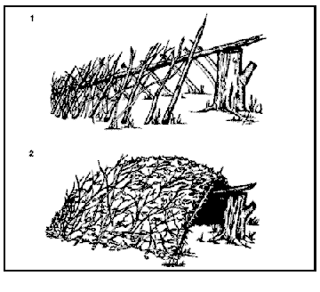
Ideally your shelter should be no more than three feet tall and as long as your body length to conserve heat.
Water
If you want to survive longer than three days you will need to find a source of clean water. The easiest way to access clean drinking water is to collect rainwater, but this isn’t always possible.
You should always carry water purification tablets when you go out hiking, they are a cheap and lightweight way to clean water effectively.
If you don't have a receptacle:
A last resort method to make water a bit safer to drink is to run it through fabric such as a shirt or bandana. Unfortunately this will not remove harmful microbes.
Drinking water in the wilderness is always a calculated risk. Somewhat dirty water is often better than no water if you have been out for days.
Food
The average human can survive for over three weeks without food. This means that finding food is not your priority.
Another important thing to consider is that a lot what looks like food in the wilderness can actually be quite harmful. Foraging for food should be a last resort, especially if you are not familiar with what’s edible in your region.
The following few pages will briefly go over what is and isn’t edible in the woods of southern Ontario.
Insects and other creepy crawlies
Generally speaking, most insects (six legs) are fine to eat. However, you should avoid other creepy crawlies such as spiders and centipedes. You should also avoid anything that is brightly coloured or hairy.
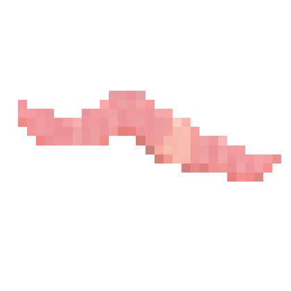
Earthworm (Lumbricus terrestris) Safe
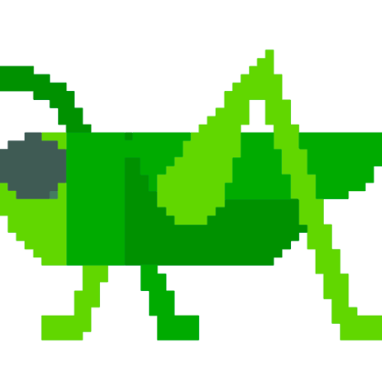
Grasshopper (Orthoptera) Safe
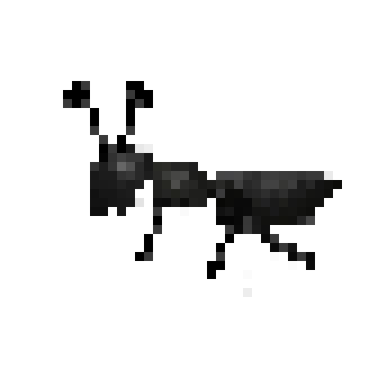
Ant (Formicidae) Safe
Mushrooms
Do not eat a mushroom unless you are 100% sure it is safe. There are many poisonous mushrooms that look very similar to edible ones.
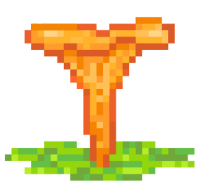
Chanterelle (Cantharellus) Safe
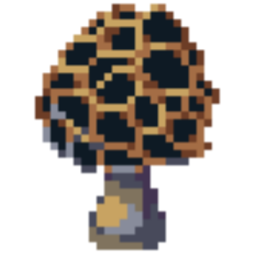
Morel (Morchella) Safe

Destroying Angel (Amanita bisporigera) AVOID

King Bolete (Boletus edulis) Safe
There are thousands of species of fungi in Ontario, so chances are that the potential food item you've found is not in this guide. No guide to fungi in Ontario is complete, so if you come across a mushroom and are not 100% sure it is exactly the same as the one in the guide don't eat it.
If a poisonous substance has been ingested there isn't much to do except spit it out and drink lots of water to try to dilute it. So it's best to avoid anything that could be poisonous.
Plants
As with mushrooms, do not eat a plant that you cannot identify.
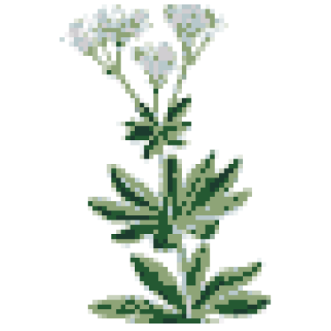
Bedstraw (Galium) Safe
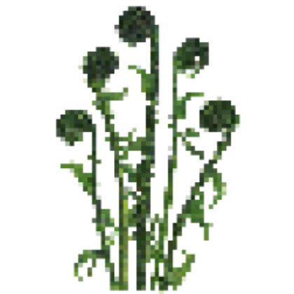
Fiddleheads (Polypodiales) Safe
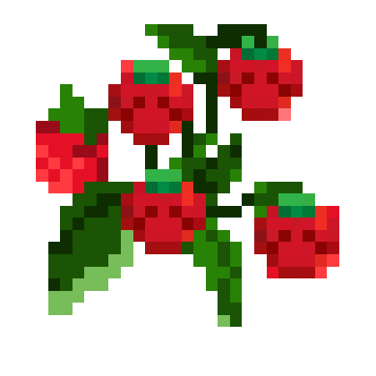
Strawberries (Fragaria) Safe
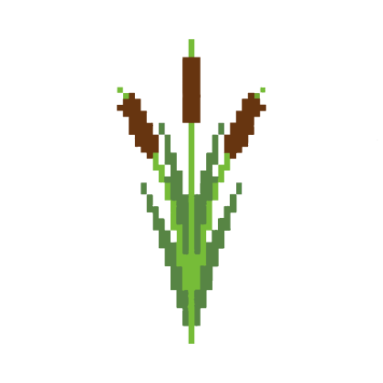
Cattails (Typha) Safe

Indian Pipe (Monotropa uniflora) Safe

Giant Hogweed (Heracleum mantegazzianum) AVOID
Plants cont.
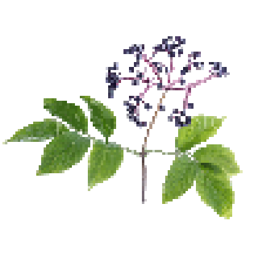
Elderberry (Sambucus) AVOID

Northern Blue Flag (Iris versicolor) AVOID
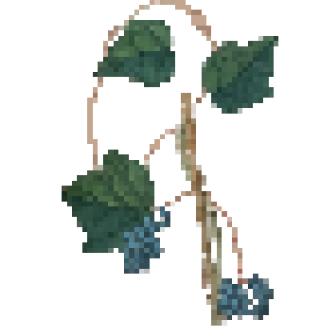
Moonseed (Menispermum canadense) AVOID